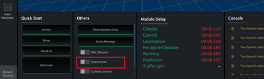
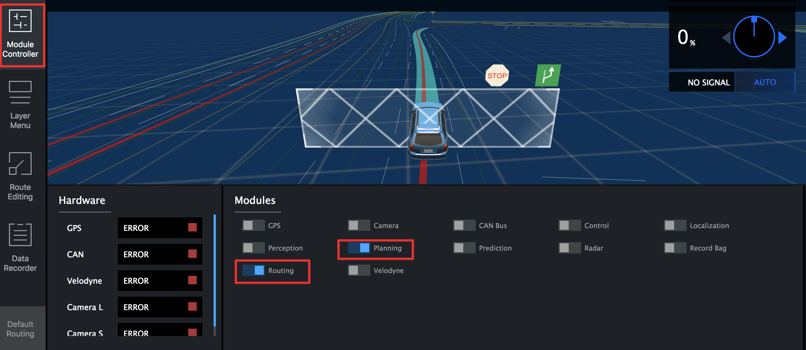

DreamView FAQs
I’m having difficulty connecting to localhost:8888 (Dreamview).
The Dreamview web server is provided by the dreamview node(A node is an executable in ROS concept). Before accessing the Dreamview page, you need to build the system(including dreamview node) within the docker container following the guide. Once built, dreamview node will be started after the step bash scripts/bootstrap.sh.
So if you can not access Dreamview, please check:
- Make sure you have dreamview process running correctly. In the latest version,
bash scripts/bootstrap.shwill reportdreamview: ERROR (spawn error)if dreamview fails to start. For early version, please check with command:supervisorctl status dreamvieworps aux | grep dreamview. If dreamview is not running, please refer to How to Debug a Dreamview Start Problem or go to Dreamview does not load successfully. - Make sure the address and port are not blocked by the firewall.
- Make sure you're using
:8888 instead of localhost:8888 if you are not accessing the Dreamview page through the host machine.
Dreamview does not open up if I install more than 1 version of Apollo?
This issue occured because of port conflict error. Even though you setup two different docker environments, both of them are still trying to use port 8888 on your machine, therefore causing a port conflict issue. If you'd like to run both versions at the same time, please make sure different ports are set.
To do so,
- Open
dreamview.conffile under modules/dreamview/conf add--server_ports=<PORT_NUMBER>to the end of the file. Ex: --flagfile=modules/common/data/global_flagfile.txt --server_ports=5555 - Restart apollo
This way, dreamview can be accessed from http://localhost:
Dreamview is too slow. How do I resolve it?
If you feel Dreamview is taking too long to load/work, please run both the WebGL reports. If there are any missing drivers, please install them
How to draw anything in DreamView (e.g. an arrow)
Dreamview uses https://github.com/mrdoob/three.js as graphics library. You can modify the frontend code to draw an arrow using the corresponding API of the library. After that you need to run a ./apollo.sh build_fe to compile.
How can I test planning algorithms offline?
Use dreamview and enable sim_control on dreamview to test your planning algorithm.
Adding a new point of interest permanently in the Dreamview interface
There's a default_end_way_point file for each map to specify point of interest, you can refer to the following file.
What's the function of sim_control in the backend of dreamview
It simulates a SDC's control module, and moves the car based on planning result. This is a really convenient way to visualize and test planning module
How do I turn on Sim Control?
Purpose of sim control: drive the car based on the planning trajectory. Good for debugging planning algorithms.
Apollo 2.5 or after: simply turning on the SimControl switch as seen in the image below:

Apollo 2.0 or older: you would need to enable the sim control manually, which can be performed as follows:
1. Open modules/dreamview/conf/dreamview.conf
2. Add “--enable_sim_control=true” to the second line of the file
3. Restart apollo using our bootstrap script
bash scripts/bootstrap.sh stop
bash scripts/bootstrap.sh start
Please note, planning and routing modules (see image below) should be ON while using SimControl. To navigate the ego-car, select either “route editing” or “default routing” from the side bar to define a route. You can turn the sim_control on and off from the toggle. However, a new routing request is needed each time the sim_control is restarted. 
Dreamview does not start even though the build is successful
There are 2 steps to deducing this issue:
1. Identify if the issue is due to pcl lib through gdb: this can be done by finding the coredump file under /apollo/data/core/ with name core_dreamview.$PID.
If you see logs like:
@in_dev_docker:/apollo$ gdb bazel-bin/modules/dreamview/dreamview data/core/core_dreamview.378
GNU gdb (Ubuntu 7.7.1-0ubuntu5~14.04.3) 7.7.1
Copyright (C) 2014 Free Software Foundation, Inc.
License GPLv3+: GNU GPL version 3 or later <http://gnu.org/licenses/gpl.html>
This is free software: you are free to change and redistribute it.
There is NO WARRANTY, to the extent permitted by law. Type "show copying"
and "show warranty" for details.
This GDB was configured as "x86_64-linux-gnu".
Type "show configuration" for configuration details.
For bug reporting instructions, please see:
<http://www.gnu.org/software/gdb/bugs/>.
Find the GDB manual and other documentation resources online at:
<http://www.gnu.org/software/gdb/documentation/>.
For help, type "help".
Type "apropos word" to search for commands related to "word"...
Reading symbols from bazel-bin/modules/dreamview/dreamview...done.
warning: exec file is newer than core file.
[New LWP 378]
[New LWP 379]
[Thread debugging using libthread_db enabled]
Using host libthread_db library "/lib/x86_64-linux-gnu/libthread_db.so.1".
warning: the debug information found in "/home/caros/secure_upgrade/depend_lib/libyaml-cpp.so.0.5.1" does not match "/home/caros/secure_upgrade/depend_lib/libyaml-cpp.so.0.5" (CRC mismatch).
Core was generated by `/apollo/bazel-bin/modules/dreamview/dreamview --flagfile=/apollo/modules/dreamv'.
Program terminated with signal SIGILL, Illegal instruction.
#0 0x00007f79ebd32bec in double boost::math::detail::erf_inv_imp<double, boost::math::policies::policy<boost::math::policies::promote_float<false>, boost::math::policies::promote_double<false>, boost::math::policies::default_policy, boost::math::policies::default_policy, boost::math::policies::default_policy, boost::math::policies::default_policy, boost::math::policies::default_policy, boost::math::policies::default_policy, boost::math::policies::default_policy, boost::math::policies::default_policy, boost::math::policies::default_policy, boost::math::policies::default_policy, boost::math::policies::default_policy> >(double const&, double const&, boost::math::policies::policy<boost::math::policies::promote_float<false>, boost::math::policies::promote_double<false>, boost::math::policies::default_policy, boost::math::policies::default_policy, boost::math::policies::default_policy, boost::math::policies::default_policy, boost::math::policies::default_policy, boost::math::policies::default_policy, boost::math::policies::default_policy, boost::math::policies::default_policy, boost::math::policies::default_policy, boost::math::policies::default_policy, boost::math::policies::default_policy> const&, mpl_::int_<64> const*) () from /usr/local/lib/libpcl_sample_consensus.so.1.7
(gdb) bt
#0 0x00007f79ebd32bec in double boost::math::detail::erf_inv_imp<double, boost::math::policies::policy<boost::math::policies::promote_float<false>, boost::math::policies::promote_double<false>, boost::math::policies::default_policy, boost::math::policies::default_policy, boost::math::policies::default_policy, boost::math::policies::default_policy, boost::math::policies::default_policy, boost::math::policies::default_policy, boost::math::policies::default_policy, boost::math::policies::default_policy, boost::math::policies::default_policy, boost::math::policies::default_policy, boost::math::policies::default_policy> >(double const&, double const&, boost::math::policies::policy<boost::math::policies::promote_float<false>, boost::math::policies::promote_double<false>, boost::math::policies::default_policy, boost::math::policies::default_policy, boost::math::policies::default_policy, boost::math::policies::default_policy, boost::math::policies::default_policy, boost::math::policies::default_policy, boost::math::policies::default_policy, boost::math::policies::default_policy, boost::math::policies::default_policy, boost::math::policies::default_policy, boost::math::policies::default_policy> const&, mpl_::int_<64> const*) () from /usr/local/lib/libpcl_sample_consensus.so.1.7
#1 0x00007f79ebcf7f1e in _GLOBAL__sub_I_sac.cpp () from /usr/local/lib/libpcl_sample_consensus.so.1.7
#2 0x00007f79f3e1a2da in call_init (l=<optimized out>, argc=argc@entry=2, argv=argv@entry=0x7ffc7bc11c78, env=env@entry=0x7ffc7bc11c90) at dl-init.c:78
#3 0x00007f79f3e1a3c3 in call_init (env=<optimized out>, argv=<optimized out>, argc=<optimized out>, l=<optimized out>) at dl-init.c:36
#4 _dl_init (main_map=0x7f79f402e1c8, argc=2, argv=0x7ffc7bc11c78, env=0x7ffc7bc11c90) at dl-init.c:126
#5 0x00007f79f3e0b29a in _dl_start_user () from /lib64/ld-linux-x86-64.so.2
#6 0x0000000000000002 in ?? ()
#7 0x00007ffc7bc134bd in ?? ()
#8 0x00007ffc7bc134eb in ?? ()
#9 0x0000000000000000 in ?? ()
(gdb) q
@in_dev_docker:/apollo$ addr2line -C -f -e /usr/local/lib/libpcl_sample_consensus.so.1.7.2 0x375bec
double boost::math::detail::erf_inv_imp<double, boost::math::policies::policy<boost::math::policies::promote_float<false>, boost::math::policies::promote_double<false>, boost::math::policies::default_policy, boost::math::policies::default_policy, boost::math::policies::default_policy, boost::math::policies::default_policy, boost::math::policies::default_policy, boost::math::policies::default_policy, boost::math::policies::default_policy, boost::math::policies::default_policy, boost::math::policies::default_policy, boost::math::policies::default_policy, boost::math::policies::default_policy> >(double const&, double const&, boost::math::policies::policy<boost::math::policies::promote_float<false>, boost::math::policies::promote_double<false>, boost::math::policies::default_policy, boost::math::policies::default_policy, boost::math::policies::default_policy, boost::math::policies::default_policy, boost::math::policies::default_policy, boost::math::policies::default_policy, boost::math::policies::default_policy, boost::math::policies::default_policy, boost::math::policies::default_policy, boost::math::policies::default_policy, boost::math::policies::default_policy> const&, mpl_::int_<64> const*)
??:?
More info:
~/playground/apollo$ git rev-parse HEAD
321bc25633fe2115e8ea4b2e68555c8c0d301b41
~/playground/apollo$ docker image ls
REPOSITORY TAG IMAGE ID CREATED SIZE
apolloauto/apollo dev-x86_64-20180320_1118 6a23927e28c3 7 days ago 6.92GB
apolloauto/apollo yolo3d_volume-x86_64-latest 562d2b2b5a71 11 days ago 70.6MB
apolloauto/apollo map_volume-sunnyvale_big_loop-latest 80aca30fa08a 3 weeks ago 1.3GB
apolloauto/apollo localization_volume-x86_64-latest be947abaa650 2 months ago 5.74MB
apolloauto/apollo map_volume-sunnyvale_loop-latest 36dc0d1c2551 2 months ago 906MB
build cmd:
in_dev_docker:/apollo$ ./apollo.sh build_no_perception dbg
- Compile pcl and copy the pcl library files to
/usr/local/lib:
Inside docker:
(to keep pcl in host, we save pcl under /apollo)
cd /apollo
git clone https://github.com/PointCloudLibrary/pcl.git
git checkout -b 1.7.2 pcl-1.7.2
then hack CMakeLists.txt with :
~/playground/apollo/pcl$ git diff
diff --git a/CMakeLists.txt b/CMakeLists.txt
index f0a5600..42c182e 100644
--- a/CMakeLists.txt
+++ b/CMakeLists.txt
@@ -7,6 +7,15 @@ endif()
set(CMAKE_CONFIGURATION_TYPES "Debug;Release" CACHE STRING "possible configurations" FORCE)
+if (CMAKE_VERSION VERSION_LESS "3.1")
+# if (CMAKE_CXX_COMPILER_ID STREQUAL "GNU")
+ set (CMAKE_CXX_FLAGS "${CMAKE_CXX_FLAGS} -std=gnu++11")
+ message("Build with c++11 support")
+# endif ()
+else ()
+ set (CMAKE_CXX_STANDARD 11)
+endif ()
+
# In case the user does not setup CMAKE_BUILD_TYPE, assume it's RelWithDebInfo
if("${CMAKE_BUILD_TYPE}" STREQUAL "")
set(CMAKE_BUILD_TYPE RelWithDebInfo CACHE STRING "build type default to RelWithDebInfo, set to Release to improve performance" FORCE)
Then build with:
cd pcl
mkdir build
cd build
cmake ..
(We don't know the parameters that Apollo used, so we keep it by default)
#backup pcl lib
mkdir -p /usr/local/lib/pcl.origin
mv /usr/local/lib/libpcl* /usr/local/lib/pcl.origin
#replace with our build
cp -a lib/* /usr/local/lib/
ldconfig
And finally restart Dreamview using
bash scripts/bootstrap.sh stop
bash scripts/bootstrap.sh start
I want to plot my own graphs for my algorithms, where should I go?
Go to the PnC Monitor section in Dreamview Doc.
What is Dreamland?
Dreamland is Apollo's web-based simulation platform. Based on an enormous amount of driving scenario data and large-scale cloud computing capacity, Apollo simulation engine creates a powerful testing environment for the development of an autonomous driving system, from algorithms to grading, and then back to improved algorithms. It enables the developers and start-ups to run millions of miles of simulation daily, which dramatically accelerates the development cycle.
To access Dreamland, please visit our Simulation website and join now!
More DreamView FAQs to follow.